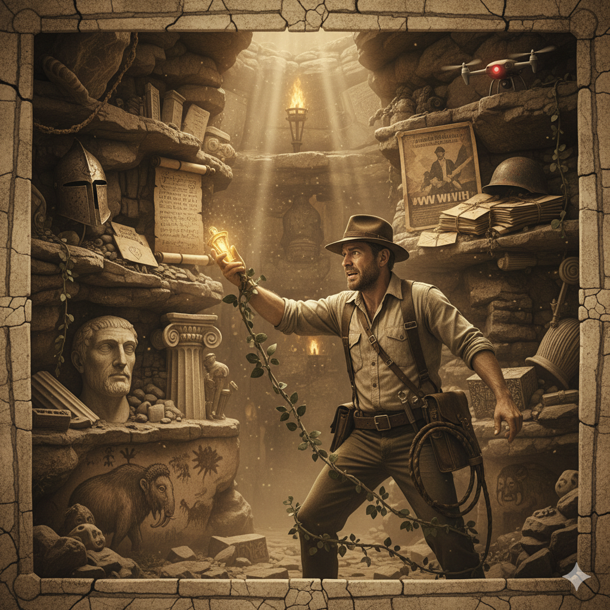
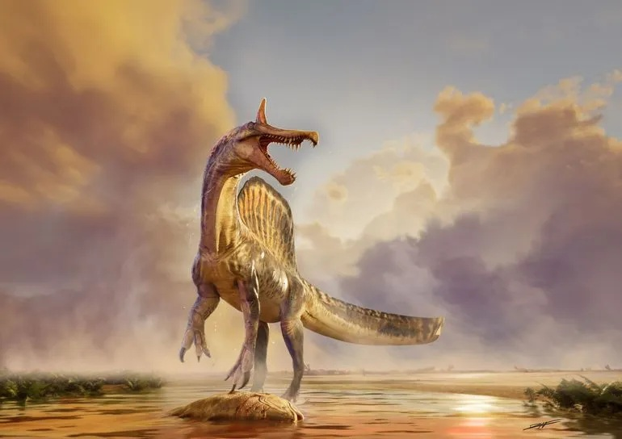
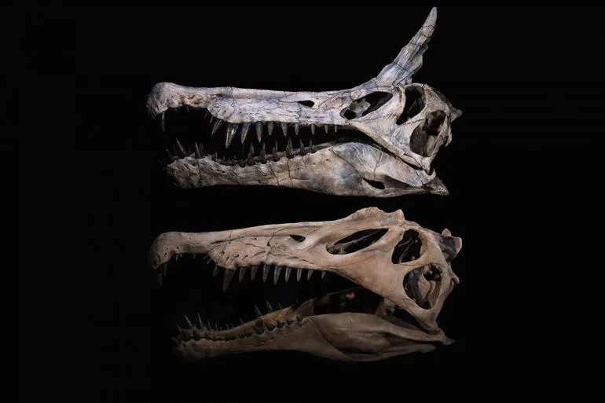
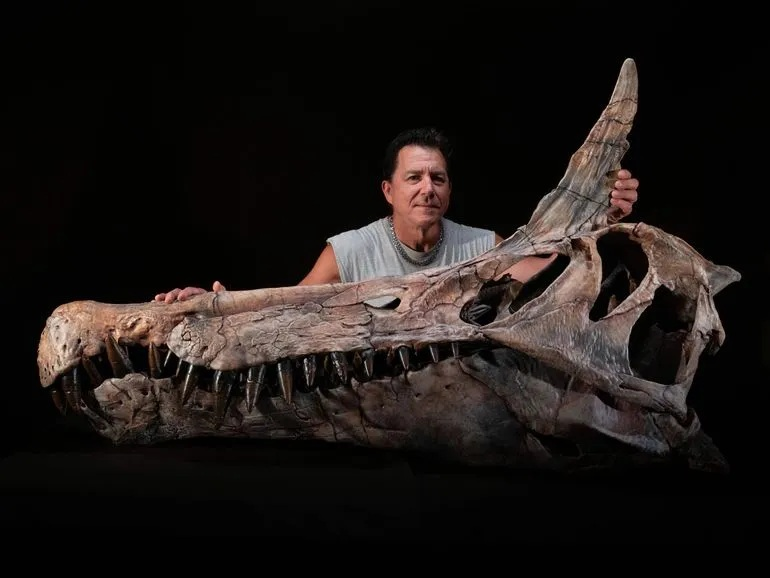

Publié le 20/07/2026


Spinosaurus mirabilis se tient au bord d'une rivière, au-dessus de sa proie, il y a environ 95 millions d'années.
Une crête en forme de cimeterre et des dents entrecroisées caractérisent ce géant des eaux, l'une des dernières espèces de spinosauridés. © Illustration de Dani Navarro
Une équipe dirigée par l'université de Chicago aux Etats-Unis a découvert un nouveau dinosaure géant piscivore, alors que l'on pensait qu'aucun animal de ce genre n'existait.
Des paléontologues ont découvert une nouvelle espèce colossale de dinosaure dans une région reculée du Sahara.
Baptisé Spinosaurus mirabilis – ce qui signifie "Spinosaurus étonnant" en latin – ce géant vivait dans l’actuel Niger il y a plus de 95 millions d’années,
précisent nos confrères de la BBC, loin des zones côtières où l’on trouve habituellement des dinosaures chasseurs de poissons similaires.

Moulages du crâne du nouveau spinosauridé à crête en cimeterre Spinosaurus mirabilis du Niger (en haut) et de son célèbre cousin Spinosaurus aegyptiacus (en bas) de la côte nord de l'Afrique. © Keith Ladzinski
Long d'environ 12 mètres et pesant 5 à 7 tonnes, cette nouvelle espèce se distingue facilement des autres Spinosaurus grâce à une crête en forme de cimeterre sur la tête.
Cette particularité est si inhabituelle que les chercheurs ne l’ont pas reconnue lors de sa découverte en 2019, n’en comprenant l’importance qu’en 2022 après avoir trouvé davantage de fossiles.
Les fossiles de Spinosaurus connus auparavant proviennent surtout d’anciennes zones côtières, explique la BBC.
Ces dinosaures étaient très adaptés à la chasse au poisson, avec un long museau et des dents coniques croisées rappelant celles des crocodiles modernes.
Cependant, S. mirabilis a été trouvé à des centaines de kilomètres des côtes marines les plus proches.
Les chercheurs pensent que cette région du Niger était autrefois un paysage forestier traversé par des rivières, plutôt qu’un environnement côtier.
"Cette découverte a été si soudaine et incroyable qu'elle a vraiment ému notre équipe", a déclaré Paul Sereno, professeur de biologie et d'anatomie des organismes à l'université de Chicago,
qui dirigeait le groupe de 20 personnes.

Le paléontologue Paul Sereno s'émerveille devant le moulage du crâne du premier dinosaure à avoir été nommé dans la zone fossilifère de Jenguebi, le spinosauridé Spinosaurus mirabilis. © Keith Ladzinski
(Article du site de la RTBF )
Les commentaires sont soumis à modération et doivent être approuvés avant publication.